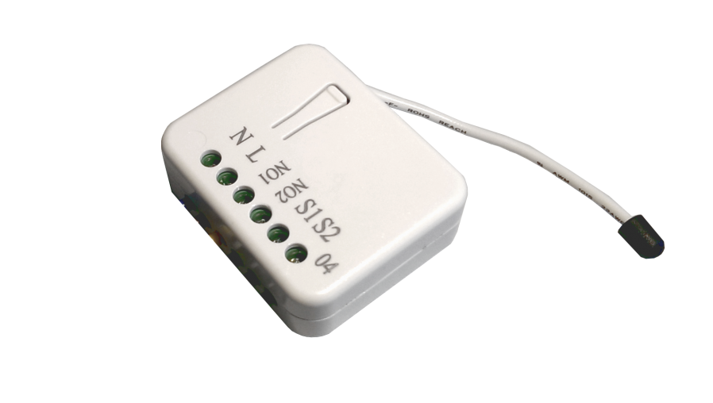
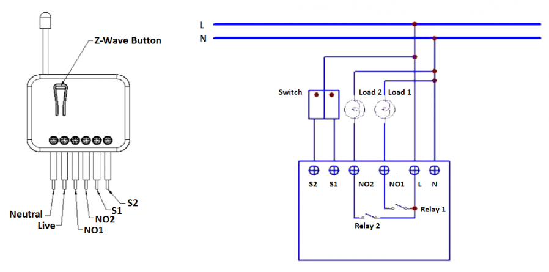

PHI_PAN04
Firmware Version : 1.0 |
 |
Quick StartA This device is a Z-Wave Actor. Tripple Click the Button on the device confirms the inclusion, exclusion and association. After power up it will stay in auto inclusion mode for 4 minutes. To support handling of the device when already installed the external switch can be used for inclusion or exclusion for 3 minutes after power up. Please refer to the chapters below for detailed information about all aspects of the products usage. |
Product description
This Insert Switch allows controlling two independent loads both wirelessly via Z-Wave and locally utilizing a traditional wall switch. Thanks to its calibration technology the device cannot only be used to switch resistive devices but also works perfectly with many kind of reactive or resistive loads such as fluorescent lights or LEDs. This insert switch module has a power meter function and is able to measure instant power, voltage, current, power factor and accumulated power consumption. In addition to this, the device has an overload protection. The device is placed in a wall box right behind the normal switch. The switch is not longer directly connected to the load but acts as input device for the insert that is controlling the load. This device is designed for a 3 wire system and needs a neutral wire in the wall box.
Installation Guidelines

Put the in wall switch into a wall box and connect the pins as shown in the figure.

Behavior within the Z-Wave network
I On factory default the device does not belong to any Z-Wave network. The device needs to join an existing wireless network to communicate with the devices of this network. This process is called Inclusion. Devices can also leave a network. This process is called Exclusion. Both processes are initiated by the primary controller of the Z-Wave network. This controller will be turned into exclusion respective inclusion mode. Please refer to your primary controllers manual on how to turn your controller into inclusion or exclusion mode. Only if the primary controller is in inclusion or exclusion mode, this device can join or leave the network. Leaving the network - i.e. being excluded - sets the device back to factory default.
If the device already belongs to a network, follow the exclusion process before including it in your network. Otherwise inclusion of this device will fail. If the controller being included was a primary controller, it has to be reset first.
Tripple Click the button on the device confirms inclusion and exclusion. After power up it will stay in auto inclusion mode for 4 minutes. To support handling of the device when already installed the external switch can be used for inclusion or exclusion for 3 minutes after power up.
Operating the device
Manual Operation
The device can be operated suing the externally connected switch. Three different modes are supported:
- Edge Mode: Die Position of the external switch determines the switching state of the relay. After a wireless switching command it may be needed to operate the switch twice to return to the direct relation of switch position and relay state. This mode is the factory default mode.
- Toogle Mode: Each "ON"-Position of the external switch will toggle the state of the relays. This mode is particularly suited for mono-stable switches.
- Edge/Toggle-Mode: Every change of the state of the external switch results in a change of the relay state.
Remote Operation
Remote On/Off control of the switch is possible with any Z-Wave controller. Further you can set associations to let your device controlled by other Z-Wave devices like sensors.
The switch is able to detect the current wattage (5 - 1500W) and overload wattage (1600 - 1700W) of connected loads. When detecting overload state, the switch will be disabled and the LED will flash quickly. Turning off and on of the power supply will reset from this state.
Node Information Frame
NI The Node Information Frame is the business card of a Z-Wave device. It contains information about the device type and the technical capabilities. The inclusion and exclusion of the device is confirmed by sending out a Node Information Frame. Beside this it may be needed for certain network operations to send out a Node Information Frame.
Tripple Click the button on the device sends out a Node Information Frame.
Associations
A Z-Wave devices control other Z-Wave devices. The relationship between one device controlling another device is called association. In order to control a different device, the controlling device needs to maintain a list of devices that will receive controlling commands. These lists are called association groups and they are always related to certain events (e.g. button pressed, sensor triggers, ...). In case the event happens all devices stored in the respective association group will receive a common wireless command.
Association Groups:
| 1 | Relay 1 and 2 together (max. nodes in group: 1) |
| 2 | Relay 1 (max. nodes in group: 1) |
| 3 | Relay 2 (max. nodes in group: 1) |
Configuration Parameters
Z-Wave products are supposed to work out of the box after inclusion, however certain configuration can adapt the function better to user needs or unlock further enhanced features.
IMPORTANT: Controllers may only allow to configure signed values. In order to set values in the range 128 … 255 the value sent in the application shall be the desired value minus 256. For example: to set a parameter to 200 it may be needed to set a value of 200 minus 256 = minus 56. In case of two byte value the same logic applies: Values greater than 32768 may needed to be given as negative values too.
| Value | Description |
|---|---|
| 1 — 32000 | seconds (Default 720) |
| Value | Description |
|---|---|
| 1 — 32000 | seconds (Default 6) |
| Value | Description |
|---|---|
| 1 | Relay 1 and Relay 2 (Default) |
| 2 — 3 | Relay 1 |
| 3 — 4 | Relay 2 |
| Value | Description |
|---|---|
| 1 | Edge Mode (Default) |
| 2 | Toggle Mode |
| 3 | Edge/Toggle Mode |
| Value | Description |
|---|---|
| 1 — 1500 | W (Default 1500) |
| Value | Description |
|---|---|
| 1 — 10000 | kWh (Default 10000) |
Technical Data
| IP Rating | IP20 |
| Explorer Frame Support | No |
| SDK | |
| Device Type | Slave with routing capabilities |
| Generic Device Class | Binary Switch |
| Specific Device Class | Binary Power Switch |
| Routing | Yes |
| FLiRS | No |
| Firmware Version | 1.0 |